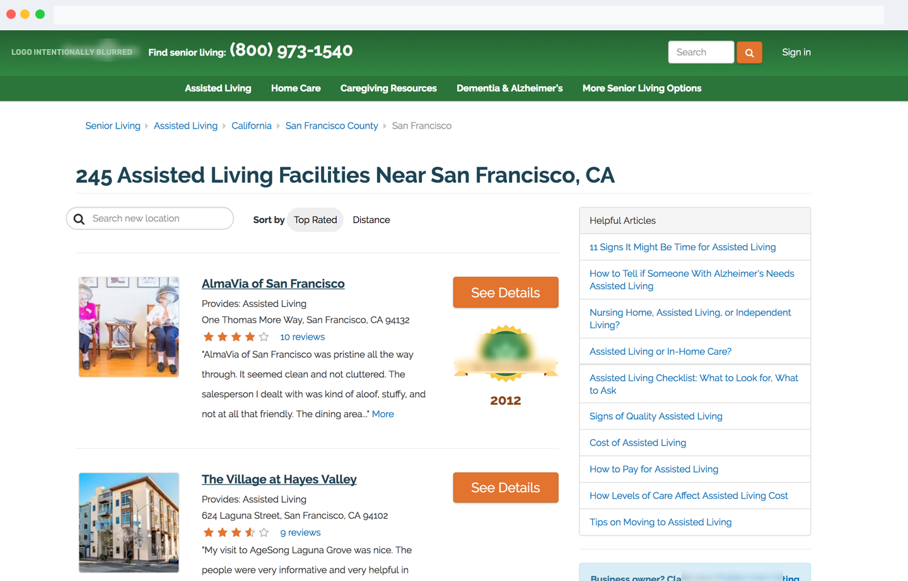
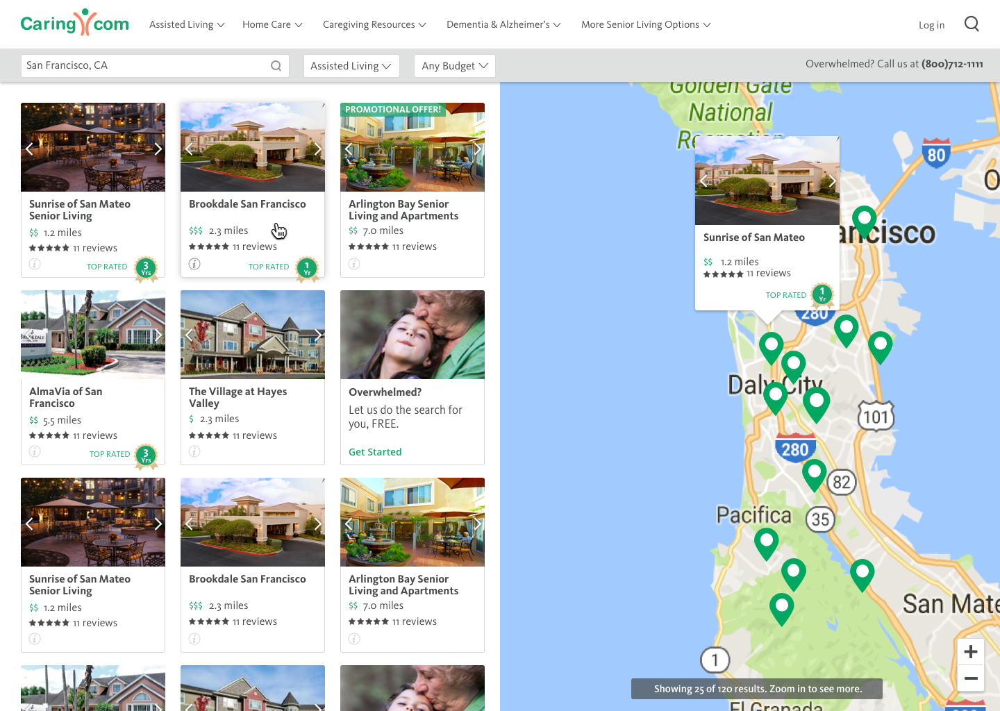
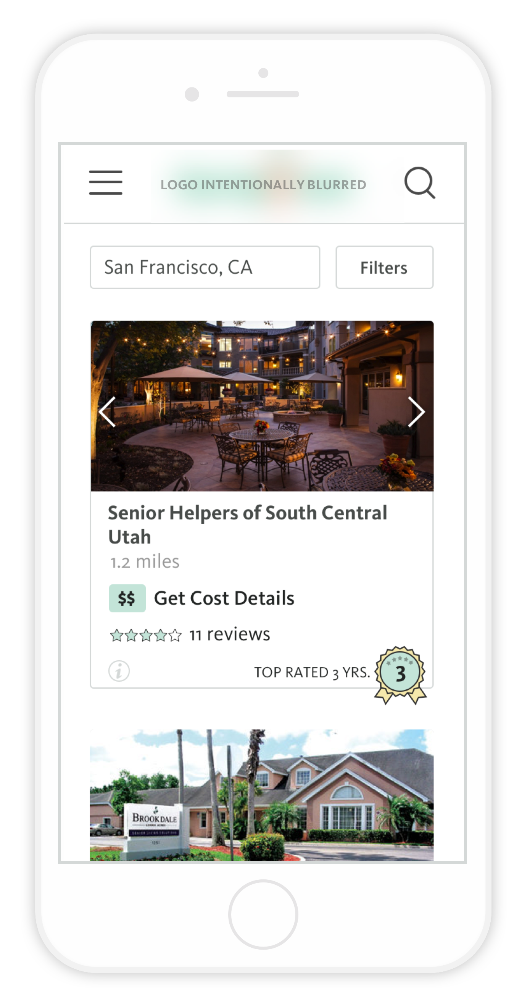

04 CONTACT
Say Hello
Have a cool project? Want to get in contact or just want to say hello? Drop me a line.
Search is an important element in how we help our customers. We provide a robust online directory full of information about senior care providers. Search allows users to filter through that information to find the care they need.
Users have a hard time finding senior care through current search results because they are not given the information they need to decide which providers will be a good fit.
To significantly increase engagement, qualitative usability, and conversion on the search results pages.
For more context, read a bit about Company XYZ
The first version of Search was built entirely off of SEO logic and acted as individual landing pages instead of a complete flow. Because of this, search results did not provide enough information about communities for the user to decide which ones were interesting. They gave the user too many choices to evaluate with no method of trimming them down. They also didn't take into account the user's current level of knowledge about senior care. Because of this, we had low engagement and high bounce rates on those pages.
Our goal was to explore ways we could help the user with a better search experience. We measured this by tracking engagement, conversion and qualitative usability. Along the way, we focused on questions like, "does the user get results without mental exertion?" "Does the user have a list of communities they want to explore beyond the website?"
This is what the search experience looked like before:
The search results page before I joined. Very little valuable information is shown about the communities listed.
The flow didn't make sense to me.
The user's main concerns when searching for senior care are distance, price, rating, and photos. The search results didn't give the user the information they needed to be able to know which community to click on. Instead they were given an overwhelming amount of text that added cognitive load for no reason.
The user had to go back and forth between the community page and search results page to find a community that would work with their basic needs. I felt that they were doing too much work.
We wanted the user to land on the search page and immediately feel like they would be able to find what they were looking for. I removed all unnecessary information and focused on distance, price, rating and images - the main things needed for the user to be able to compare communities. I borrowed the map and list concept from Zillow and VRBO, two sites that our users are familiar with.
My design for the new search results page. The redesign was also part of a larger project to switch our website over to new design styles.
When you're designing for an older demographic, translating a desktop experience to mobile can be really tricky. You have to make sure your targets are large enough that users won't have a hard time clicking on them while paring information down to the bare minimum.
Research behind search behaviors on mobile and desktop showed that more users were on mobile to just browse or look up specific communities, while users on desktop tended to be deep in search mode. For that reason, we decided to drop the map from mobile for v1. This would save us 3-4 days in engineering work and QA and allow us to launch quickly and get data. We set up trackers for map usage and decided that if it seemed valuable enough, we would implement this in later versions.
Have a cool project? Want to get in contact or just want to say hello? Drop me a line.